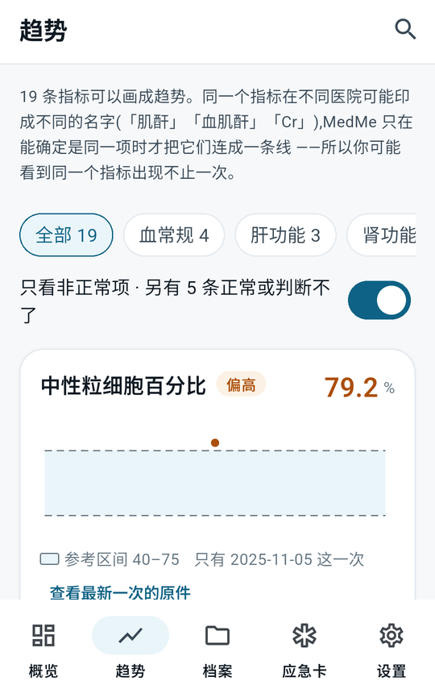

轻松导入，智能整理，一目了然。
拍照、上传PDF，或导入已有的医疗文件。
识别内容、日期、医院、检查项目，并整理到时间线上。
看趋势、找原件、展示给医生查看。

医疗工作者？了解医生模式 →
MedMe 是开源项目。查看源码 → · 反馈问题 → · 关于我们 →
病人扫码获取电子病历。
很多跨院治疗的人，来的时候带了一堆纸质材料，本身就诊时间就短，很难让病人在短时间内充分了解和确认所有信息。
拍什么、做什么用、交给谁、存多久、谁能打开 —— 五句话说清，病人签字确认。
化验单、处方、检查报告，快速记录。
内容加密后生成二维码，病人扫描后，完成加密端到端传输。
想自己用 MedMe 记录病历？看看个人版 →